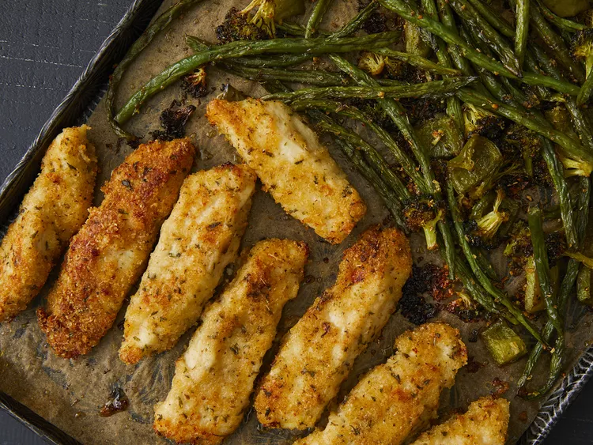

Parmesan Chicken Recipe 🐔

Description ğŸ’
This extra-crispy sheet pan chicken and veggies dinner is baked on one pan and packed with flavor!
Ingredients 🥣
- 1 tablespoon dried oregano
- 1 ½ pounds skinless, boneless chicken breasts
- 4 tablespoons butter, melted
- 1 cup panko bread crumbs
- 3 tablespoons olive oil
Directions 🍳
- Preheat the oven to 400 degrees F (200 degrees C). Line a sheet pan with parchment paper.
- Place flour into a bowl. Place melted butter into a second bowl. Mix panko, 2/3 cup Parmesan cheese.
- Slice chicken into 1 1/4-inch strips, then coat in flour. Dredge floured strips in melted butter.
- Bake in the preheated oven for 10 minutes. Flip chicken strips and stir veggies, then continue to bake until chicken juices run clear and veggies are crisp-tender.

Back to home